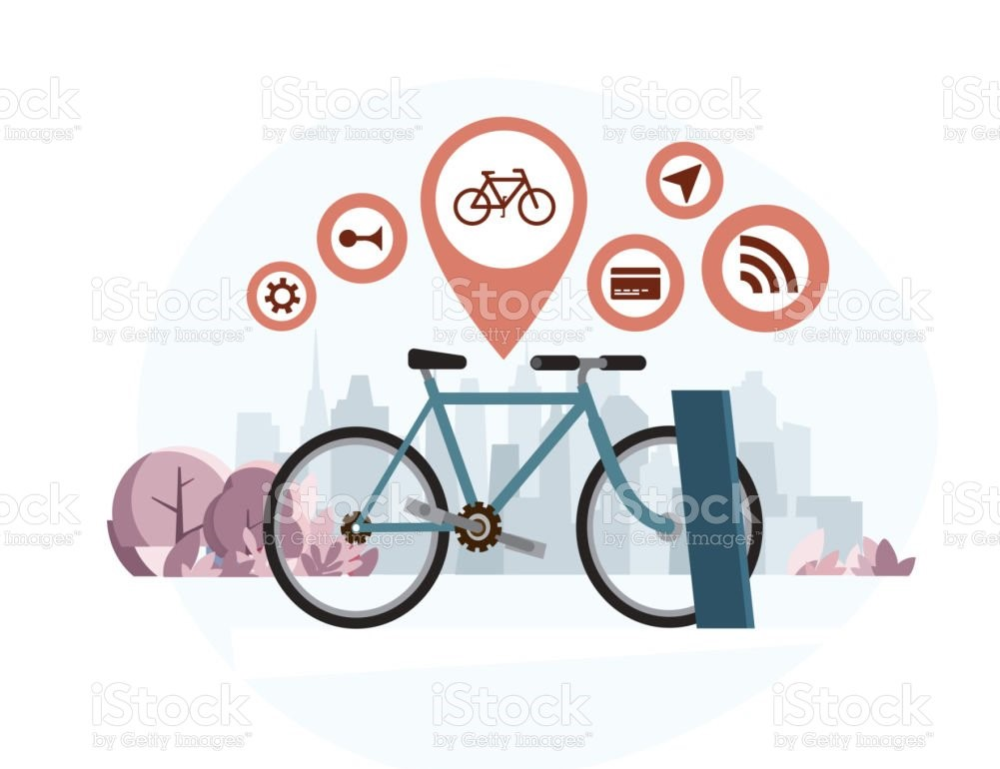

I am a data scientist interested in building high-performing ML applications for real-world problems. I have experience in MLOps, time series forecasting, as well as predictive modeling using data mining and machine learning.

A key factor in the success of bike-sharing programs is the efficient allocation of rental bikes across the city. This study aims to predict bike demand based on time differences by making hourly forecasts over a 24-hour horizon using time series, deep learning, and tree-based models.
View Project (PDF) | GithubForecasting web traffic helps businesses better understand future trends and user behavior and can be leveraged to improve IT infrastructure. This analysis uses time series methods to forecast the number of daily website visits over a 30-day horizon.
View Project (PDF) | GithubDelinquent borrowers are a major risk factor in peer-to-peer lending. This analysis implements machine learning methods to predict if a person will default based on their loan application, allowing the business to approve a higher quality of loan applicants and therefore increasing returns to investors.
View Demo | Github